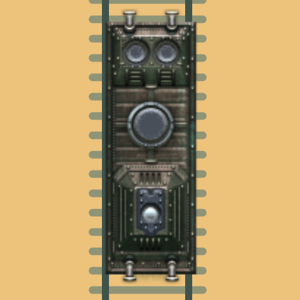

<- all projects

Pocket Timetables
PC
Volume
Live
Every train on time.
A valley railway is waiting to reopen. Help dispatcher Jo arrange departures for local, mail and express trains, recover a stationmaster's diary and prepare the centenary service. Routes and speeds are fixed; you choose when each train leaves, and a stretch of single track can carry only one train at a time, in either direction. Drag departures to the minute, then preview the timetable on a miniature valley map and inspect any conflict. Any valid timetable succeeds, and punctuality medals are optional. Play 70 scenarios across five chapters, plus a daily brief and 90 dispatcher briefs.